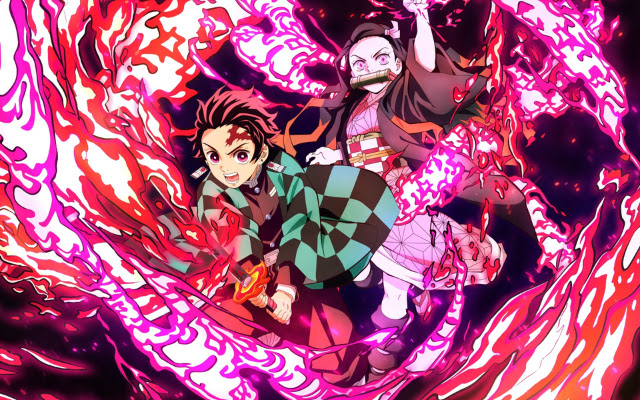

About Tanjiro
Tanjiro is a water swords man who fights and searches for an antidote for his sister's condition. She's a demon.
Tanjiro and Nezuko
Tanjiro's story
- He might be the decendant of the Sun Hashira from years ago
- His family got attacked by a demon while he was away.
- Nezuko,his sister, survived but turned into a demon.
Tanjiro's friends
Tanjiro's friends are Zenitsu and Inosuke